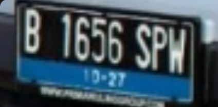

Vehicle Number Plates Detection Using Transformer Based OCR
Python, PyTorch, Hugging Face, Flask
Overview
A fine-tuned Transformer-based OCR system for detecting and reading Indonesian vehicle
number plates. The model is based on
microsoft/trocr-base-printed, fine-tuned on augmented plate images and
deployed via Hugging Face with a Flask server and simple HTML frontend.

Image Preprocessing
Four transformations were applied to augment the training images:
- Super resolution to enhance low-quality plate images
- Motion blur to simulate real-world capture conditions
- Adaptive thresholding to improve text contrast
- Bounding box extraction to isolate the plate region
Model
Fine-tuned microsoft/trocr-base-printed, a Transformer-based OCR model
that combines a Vision Transformer (ViT) encoder with a text decoder for end-to-end
optical character recognition on printed text.
Deployment
The fine-tuned model is hosted on Hugging Face for API inference. A Flask server wraps the model endpoint, and a simple HTML frontend provides easy interaction for uploading plate images and viewing predictions.